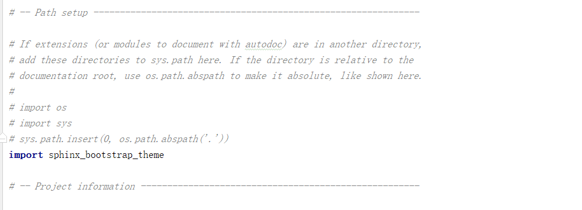
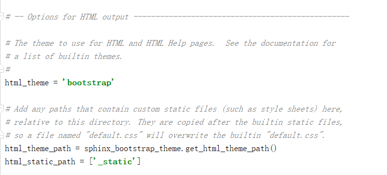
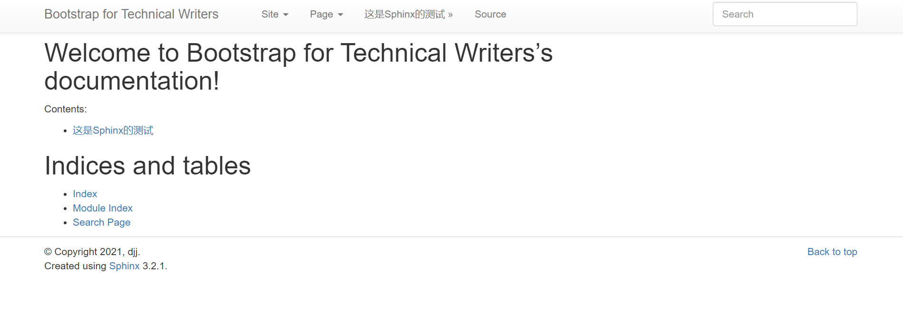

Sphinx Bootstrap Theme¶
这个Sphinx主题将Bootstrap CSS / JavaScript框架与各种布局选项，分层菜单导航和移动友好的响应式设计集成在一起。它是可配置的，可扩展的，并且可以使用许多不同的Bootswatch CSS主题。
安装 Sphinx Bootstrap Theme¶
Mac系统¶
在Terminal中运行如下代码:
pip install sphinx_bootstrap_theme
Tip
这里可能会出现 ReadTimeoutError，这时可以在pip安装时改变镜像(清华大学镜像），如下所示
pip install -i https://pypi.tuna.tsinghua.edu.cn/simple sphinx_bootstrap_theme
Windows系统¶
在命令行界面中输入以下代码:
pip install sphinx_bootstrap_theme
Tip
这里可能会出现 ReadTimeoutError，这时可以在pip安装时改变镜像(清华大学镜像），如下所示
pip install -i https://pypi.tuna.tsinghua.edu.cn/simple sphinx_bootstrap_theme
编辑 conf.py 配置文件以指向引导主题：¶
打开文档目录中source文件夹中的conf.py配置文件：sourceconfy.py
在代码顶部输入
import sphinx_bootstrap_theme如下所示：在代码下部将“html_theme“的默认主题修改为
html_theme ='bootstrap'，并在代码底部添加:html_theme_path = sphinx_bootstrap_theme.get_html_theme_path(),如下图所示：在Terminal(命令行界面)进入当前项目文件夹根目录，并运行编译命令
phinx-build -b html source build,在\build文件夹中查看网页格式如下图：
我们可以看到这个网页并不美观，所以之后我们将学习怎样对Bootstrap基础模板进行自定义设置。